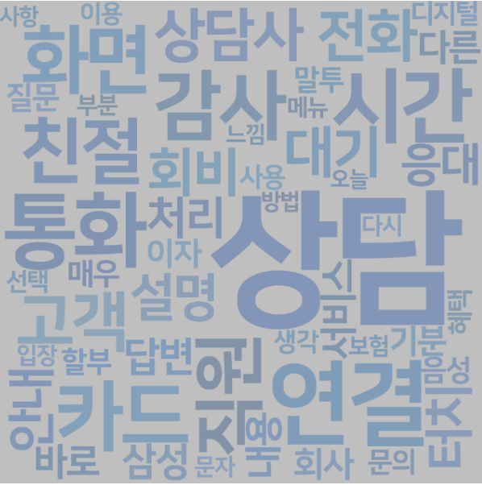
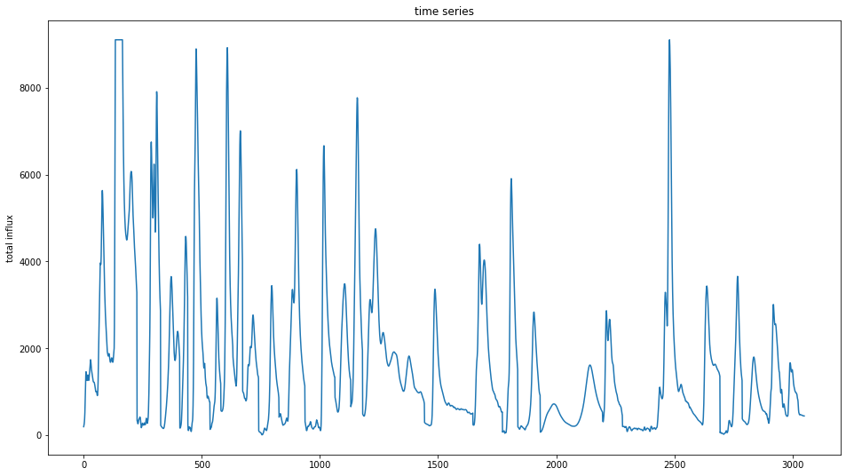
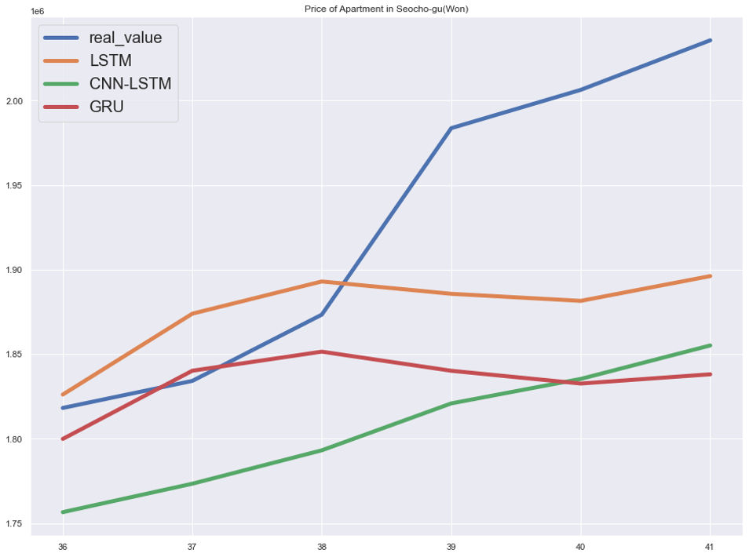
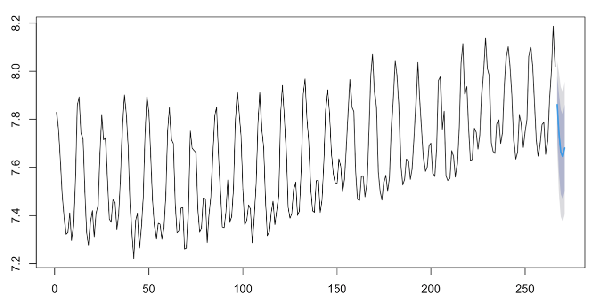
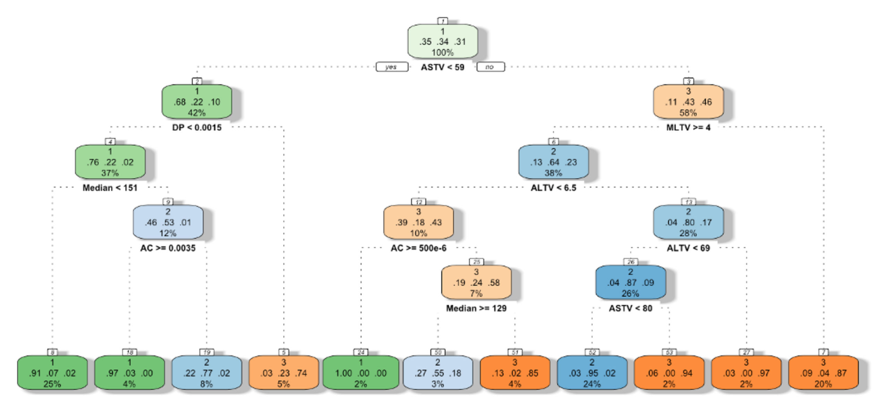

안녕하세요,
데이터분석가를 꿈꾸는 김현민입니다.
프로젝트
고객 피드백 분류 모델 개발
프로그래밍 언어 : Python
방법론 : 감성 분석, LDA
삼성카드에서 주최한 '제2회 삼성카드 데이터 분석 & 아이디어 공모전'에 참가하여, 고객 피드백 분류 모델을 개발하였다. 주어진 데이터는 고객의 피드백으로 비정형 데이터임을 고려해, 감성분석과 LDA(Latent Dirichlet Allocation)을 사용하여 고객의 피드백을 분류하였다. 먼저, 데이터는 텍스트 전처리가 필요하므로, 정규 표현식으로 변환하여 형태소를 분석하고 불용어를 제거한 후 데이터를 토큰으로 사용하여 분석에 사용하였다. 데이터 전처리 과정을 거친 후, 고객의 피드백이 긍정인지 부정인지 판단하기 위해 수집된 데이터를 기반으로 감성어 사전을 구축하여 감성분석을 하였다. 이후 만족-불만족 내의 카테고리를 분류하기 위해 LDA를 수행하여 최종적으로 고객의 피드백을 분류하였다.
댐 유입량 예측 모델 개발
프로그래밍 언어 : Python
방법론 : ARIMA, LSTM, CNN-LSTM
빅콘테스트에서 주최한 '제9회 2021 데이터분석 빅콘테스트'에 참가하여, 댐 유입 수량 예측을 통한 최적의 수량 예측 모형을 도출하는 모델을 개발하였다. 주어진 데이터는 과거 기간별 댐 유입량, 유역 별 강우 및 수위 데이터로 이를 이용하여 댐 유입량을 예측해 보고자 하였다. 데이터는 시간별로 관측된 데이터로 시계열 분석이 적합하여, ARIMA, LSTM, CNN-LSTM을 사용하였다. 먼저, 과거 데이터 중 태풍으로 인한 이례적인 장마와 집중호우가 있었기 때문에 이상치 데이터를 변환하고 분석을 진행하였다. 딥러닝 모델인 LSTM이 ARIMA보다 더 좋은 예측력을 보였고, 그중에서도 공간적인 정보도 보존하는 모델인 CNN-LSTM이 가장 좋은 예측력을 보였다. 또한, 이상치를 변환하여 사용했더니 예측력이 더 좋아진 것을 확인할 수 있었다.
서울시 아파트 실거래가 예측 모델 개발
프로그래밍 언어 : Python
방법론 : GRU, LSTM, CNN-LSTM
대학원 강의 중 일반화선형모형 수업에서 서울시 아파트 실거래가를 예측하는 모델을 구축하는 팀 프로젝트를 진행하였다. 서울시 아파트 실거래가 예측 모형을 비교를 통해 가장 좋은 예측치를 제공하는 모형을 찾아보고, 부동산 정책이 부동산 가격에 영향을 주는지 알아보고자 하였다. 서울시 아파트 실거래가는 시계열 데이터임을 고려해, 시계열 분석에 사용되는 GRU, LSTM, CNN-LSTM을 사용하였다. 각 모델로 아파트 실거래가를 예측한 후, 실제값과 예측값의 비교를 통하여 모델의 성능을 비교해 볼 수 있었다. 결과적으로 세 모델 모두 비슷한 수준으로 예측을 하였지만, CNN-LSTM이 가장 뛰어난 예측력을 보였다. 또한, 부동산 정책이 부동산 가격에 큰 영향을 미치지 않다는 것을 알 수 있었다.
동물 이미지 분류 모델 개발
프로그래밍 언어 : Python
방법론 : CNN
대학원 강의 중 자료분석특론 수업에서 동물 이미지 분류 모델을 개발하는 프로젝트를 진행하였다. Kaggle에서 분류가 되어있지 않은 동물의 이미지를 불러와, 이미지 특성을 파악해 동물의 이미지를 카테고리별로 분류해 보고자 하였다. 먼저, 이미지 데이터를 train set, validation set, test set으로 분류하여, 이미지 데이터를 학습시키는 CNN을 사용하여 모델을 학습시켰다. 파라미터를 조정해가며 accuracy와 loss를 비교하여 accuracy가 가장 높은 모델을 최종 모델로 하여 동물 이미지를 분류하였다.
미국 천연가스 소비량 예측 모델 개발
프로그래밍 언어 : R
방법론 : ARIMA, ADL, VEC
대학원 강의 중 경제자료분석 수업에서 미국 천연가스 소비량을 예측하는 모델을 구축하는 프로젝트를 진행하였다. 사용된 데이터는 미국의 천연가스 가격, 천연가스 소비량, 생산자물가지수의 월별 데이터로 시계열 분석이 가능한 ARIMA, ADL, VEC를 사용하였다. 각 모델별로 천연가스 소비량의 시도표를 확인하고, 차분을 검토하고, 모형을 식별하는 과정을 거쳐 최종 모형으로 선정하여 향후 5개월을 예측 및 95% 신뢰구간을 구해보았다. 모형별로 비교해 본 결과, ARIMA와 ADL이 VEC보다 예측력이 좋았다.
태아 건강 상태 분류 모델 개발
프로그래밍 언어 : R
방법론 : Decision Tree, Random Forest, SVC, SVM, Xgboost, KNN
대학원 강의 중 데이타마이닝 수업에서 태아 건강 상태 분류 모델을 개발하는 팀 프로젝트를 진행하였다. UCI에서 태아 심박수와 자궁 수축에 대한 데이터를 가져와, 태아의 건강 상태를 Normal, Suspect, Pathologic의 세 가지 범주로 분류하고자 하였다. 태아의 건강 상태를 Decision Tree, Random Forest, SVC(Support Vector Classifier), SVM(Support Vector Machine), Xgboost, KNN의 분류 알고리즘을 사용하였고, 가장 분류를 잘하는 모델을 찾고자 하였다. 각 모델별로 ROC curve를 그려보고 accuracy와 time을 비교해 본 결과, Xgboost와 KNN의 예측력이 가장 우수하였다.
기술 스택
통계 분석을 할 때 R, SAS, SPSS를 사용해 본 경험이 있습니다. 주로 R을 사용하여 통계 분석을 합니다.
머신러닝, 딥러닝을 할 때 주로 Python을 사용하여 코딩을 합니다.
데이터를 처리할 때 SQL을 사용해 본 경험이 있습니다.
엑셀 매크로 VBA를 사용해 본 경험이 있습니다.